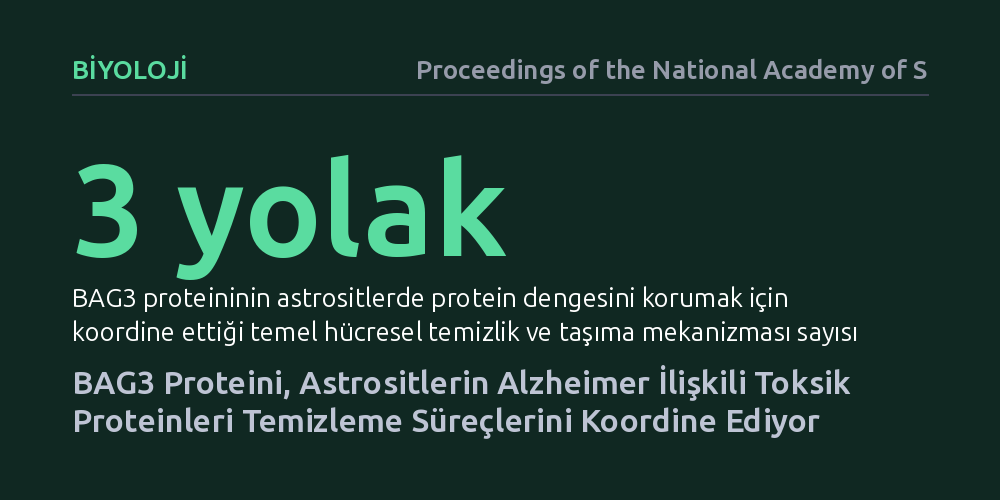

BIYOLOJI · Proceedings of the National Academy of Sciences · 2026-10-15
Araştırmacılar, beyin destek hücresi olan astrositlerin Alzheimer ile ilişkili amiloid-beta stresine nasıl uyum sağladığını inceledi. Çalışma, BAG3 proteininin proteazom, otofaji ve retromer sistemlerini eşgüdümle yöneterek hücredeki protein dengesini koruduğunu gösterdi.
Alzheimer hastalığında sadece nöron hasarına odaklanmak yerine, beyin temizliğinde kilit rol oynayan astrositlerin protein dengesini nasıl koruduğunu anlamamızı sağlar.

Alzheimer hastalığı denildiğinde akla genellikle hafıza kaybına uğrayan nöronlar (sinir hücreleri) gelir. Ancak beyin dokusu yalnızca nöronlardan ibaret değildir; onlara yapısal destek sağlayan, besleyen ve çevredeki hücresel atıkları temizleyen "astrosit" adında yıldız biçimli yardımcı hücreler bulunur. Beyinde amiloid-beta gibi toksik protein birikintileri oluşmaya başladığında, astrositlerin bu zararlı proteinleri temizleme kapasitesi kritik bir savunma hattı oluşturur.
Peki, bu destek hücreleri yoğun protein stresi altındayken kendi iç dengelerini nasıl koruyor? Eğer astrositlerin protein kalite kontrol mekanizmaları çökerse, nöronları koruyamaz hale gelirler ve sinir dokusundaki hasar hızlanır. Bu nedenle astrositlerin protein dengesini nasıl sağladığını çözmek, hastalığın hücresel düzeydeki ilerleyişini anlamak için temel bir sorudur.
Araştırmacılar bu soruyu yanıtlamak için insan biyolojisini doğrudan yansıtan modern bir hücresel model geliştirdi. Uyarılmış pluripotent kök hücre (iPSC) teknolojisinden yararlanarak laboratuvar ortamında insan astrosit hücreleri ürettiler. Bu yaklaşım, canlı insan beynine cerrahi müdahale gerekmeden, insana özgü genetik ve hücresel yanıtları güvenilir şekilde inceleme olanağı sağladı.
Bilim insanları bu astrosit modellerini amiloid-beta gibi Alzheimer ile ilişkili nörodejeneratif stres faktörlerine maruz bıraktı. Ardından hücrenin protein kalite kontrol ağlarını (proteazom, otofaji ve retromer sistemleri) moleküler ve biyokimyasal yöntemlerle takip ederek, stres altındaki hücrenin hangi protein mekanizmalarını devreye soktuğunu ayrıntılı olarak ölçtü.
Deneyler, Bcl-2 ilişkili atanogen 3 (BAG3) adlı proteinin bu süreçte merkezi bir koordinatör olduğunu gösterdi. Astrositler amiloid-beta stresine maruz kaldığında, BAG3 proteini hücredeki protein dengesini (proteostazı) tek bir kanaldan değil, birbiriyle bağlantılı üç ayrı temizlik ve taşıma sistemi üzerinden eşgüdümle yönetiyordu.
Bu üç sistem; proteinleri parçalayan proteazom, büyük hücresel atıkları yutan otofaji ve hücre içindeki kargoları geri dönüştüren retromer kompleksidir. Araştırmacılar elde ettikleri verileri, "BAG3, Aβ gibi nörodejeneratif stres faktörlerine karşı astrositik uyumun merkezi bir düzenleyicisi olarak hareket eder" tespitiyle özetliyor. BAG3, bu üç mekanizmayı aynı anda yöneterek hücrenin protein birikimi altında boğulmasını engelliyor.
Bu çalışma, Alzheimer ile mücadelede odağın yalnızca nöronlardan ibaret olmadığını; astrosit gibi destek hücrelerinin savunma sistemlerini güçlendirmenin de kritik önem taşıdığını ortaya koyuyor. Astrositlerin protein dengesini koruyan mekanizmalar anlaşılabilirse, beynin toksik protein yüküne karşı dayanıklılığını artıran yeni biyolojik yaklaşımlar geliştirilebilir.
Yine de bu bulguların canlı insan beyninde değil, laboratuvarda kök hücrelerden türetilmiş hücre modellerinde elde edildiğini akılda tutmak gerekir. Hücre kültüründe gözlenen bu eşgüdümün insan dokusundaki uzun vadeli süreçlerde nasıl işlediğinin bağımsız deneylerle doğrulanması gerekmektedir.